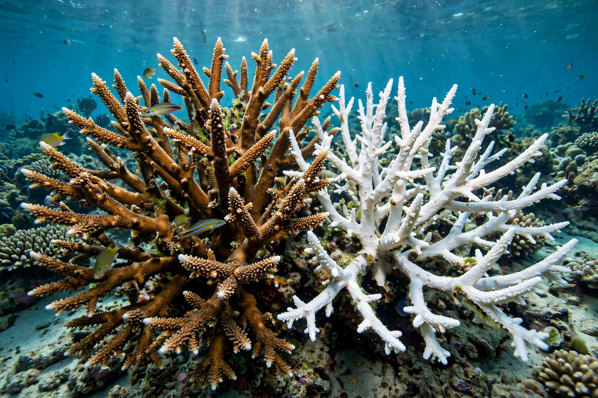

Coral bleaching

Coral bleaching occurs when reef-building corals, stressed chiefly by abnormally warm water, expel the symbiotic algae (zooxanthellae) living in their tissues. The algae supply most of the coral's food and give it colour; without them the coral turns white — its transparent tissue revealing the skeleton beneath — and may starve if the stress persists.
Bleaching is the most visible symptom of {L('Climate_change')} on {L('Coral_reef','coral reefs')}, and mass bleaching events have become far more frequent since the 1980s.
Mechanism and recovery
Corals bleach when sea temperatures exceed the local summer norm by roughly 1 °C for several weeks; the algae's photosynthesis becomes toxic under heat and light stress and the partnership breaks down. If temperatures fall in time, corals can regain algae and survive, though weakened and slower to reproduce. Prolonged heat kills the coral, and the dead skeleton is overgrown by seaweed, shifting the reef's ecology.
Local stressors — pollution, sediment, overfishing of herbivores — worsen outcomes, so reducing them improves reefs' odds of recovery between heat events.
Mass events
The 1997–98 El Niño triggered the first global bleaching event, killing an estimated one-sixth of the world's corals. Further global events followed in 2010 and in the prolonged 2014–2017 episode, during which Australia's Great Barrier Reef bleached severely in consecutive years for the first time, including in its remote northern sector.
With warming projected to make bleaching-level heat an annual occurrence on most reefs later this century under high emissions, the survival of tropical reef ecosystems in their present form is in doubt. Ocean acidification compounds the threat by slowing corals' ability to build skeletons.
See also: Coral reef · Climate change · Ocean acidification · El Niño · Great Barrier Reef